大正新脩大藏經 第20冊
No.1108B 救度佛母二十一種禮讚經 (1卷)
【】
第 1 卷
No. 1108B
救度佛母二十一種禮讚經
納摩阿(阿喇)鴉答(阿)喇葉
敬禮聖大悲藏觀自在菩薩。
波答拉勝境 綠色答(嘛)字生
三世佛業母 頂嚴無量光
祈并眷屬臨
諸天非天頂髻嚴 恭敬跪捧兩足蓮
度諸窮苦中之母 致禮救度佛母前
唵敬禮尊聖救度母。
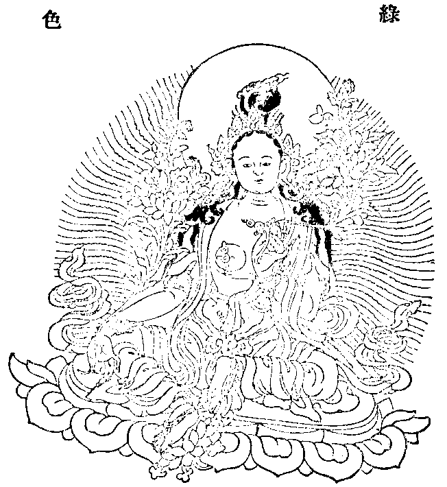
唵敬禮多哩速疾勇 咄多哩者除怖畏
咄哩能授諸勝義 具莎訶字我讚禮
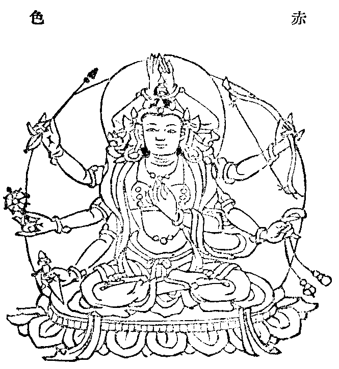
敬禮救度速勇母 目如剎那電光照
三世界尊蓮華面 從妙華中現端嚴
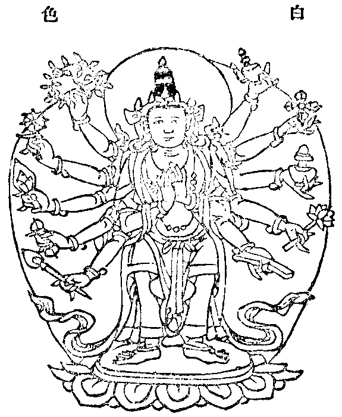
敬禮百秋朗月母 普遍圓照無垢面
如千星宿俱時聚 殊勝威光超於彼
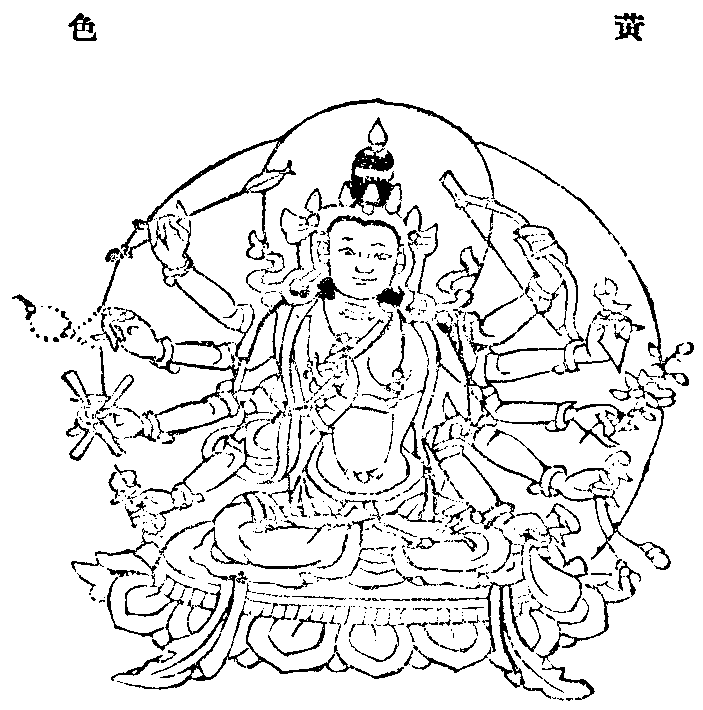
敬禮紫磨金色母 妙蓮華手勝莊嚴
施精勤行柔善靜 忍辱禪定性無境
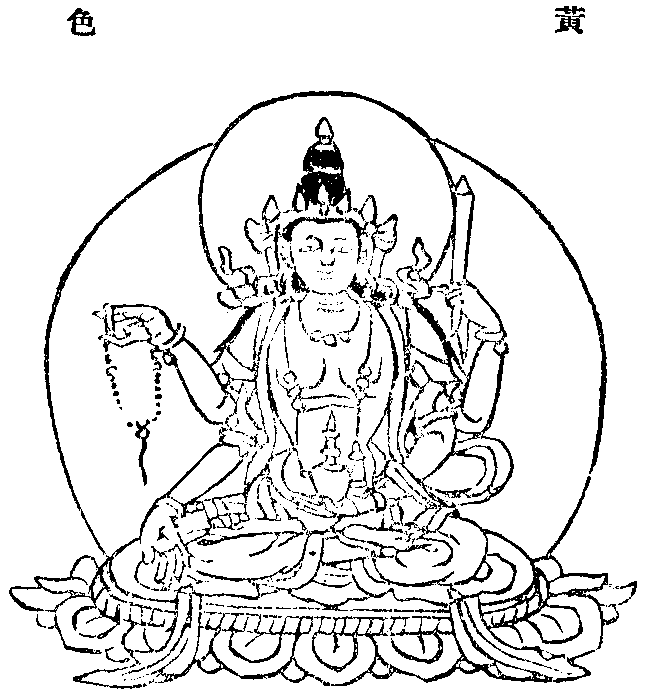
敬禮如來頂髻母 最勝能滿無邊行
德到彼岸盡無餘 勝勢佛子極所愛
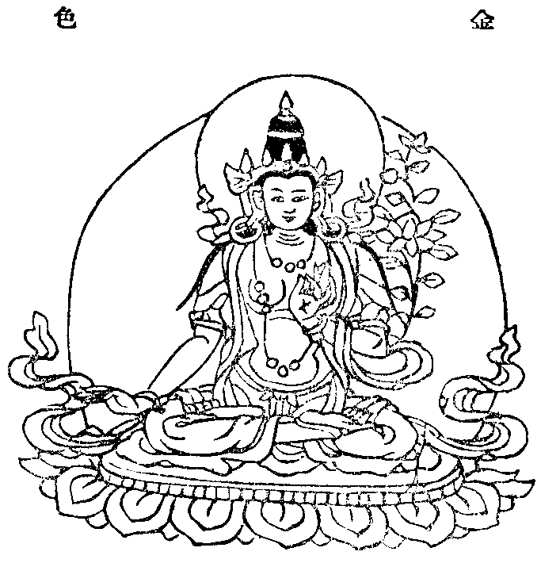
敬禮怛囉吽字母 聲愛方所滿虛空
運足遍履七世界 悉能鉤召攝無餘
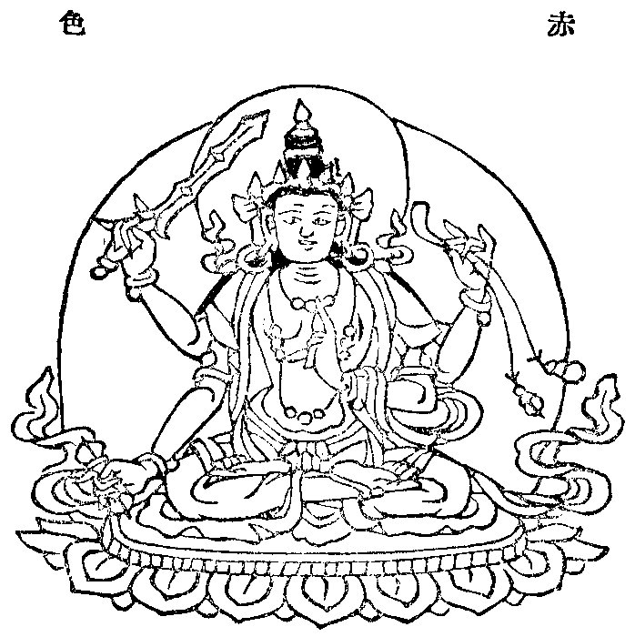
敬禮釋梵火天母 風神自在眾俱集
部多起屍尋香等 諸藥叉眾作稱歎
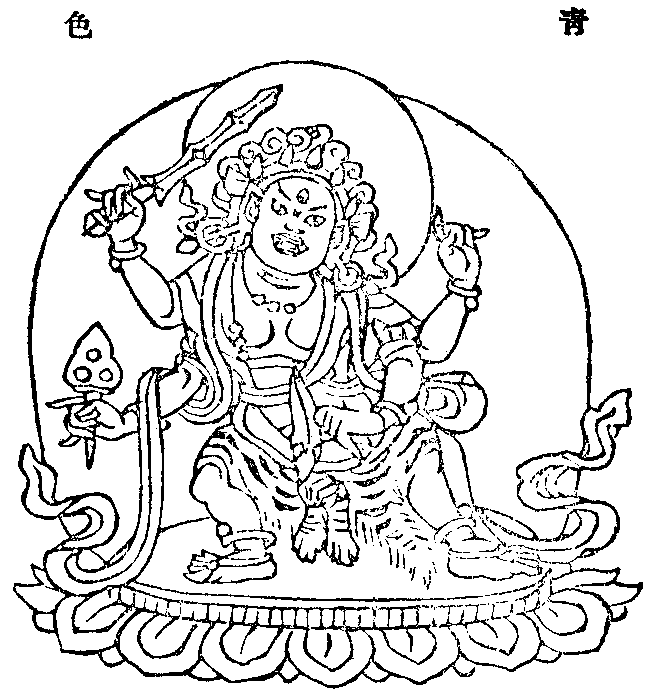
敬禮特囉胝發母 於他加行極摧壞
展左踡右作足踏 頂髻熾盛極明耀
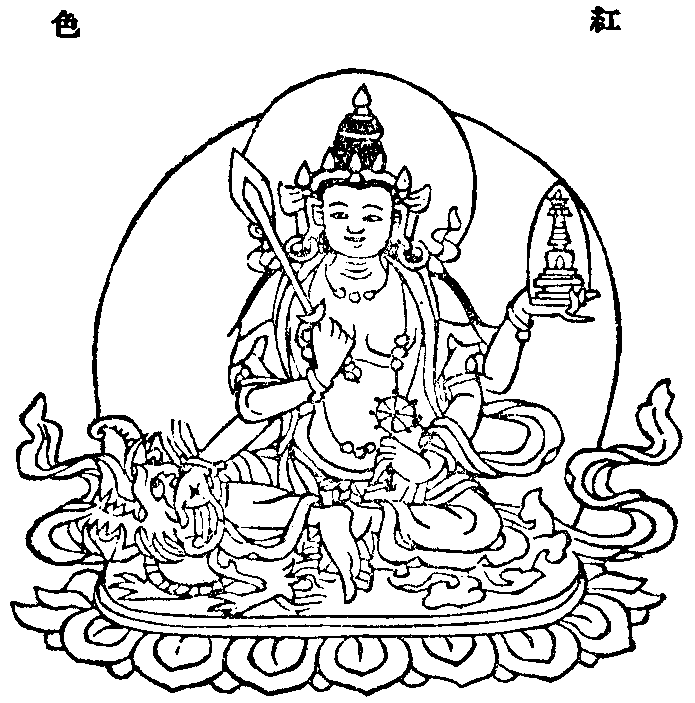
敬禮都哩大緊母 勇猛能摧怨魔類
於蓮華面作頻眉 摧壞一切冤家眾
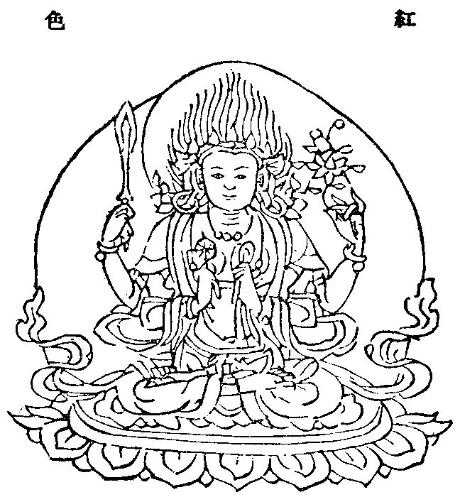
敬禮三寶嚴印母 手指當心威嚴相
嚴飾方輪盡無餘 自身熾盛光聚種
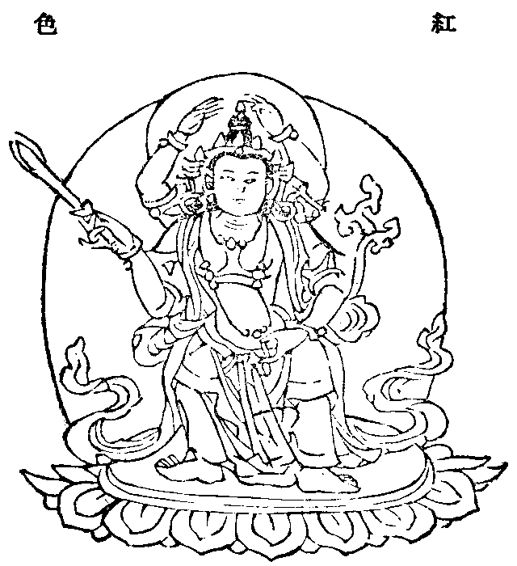
敬禮威德歡悅母 寶光珠鬘眾光飾
最極喜笑覩怛哩 鎮世間魔作攝伏
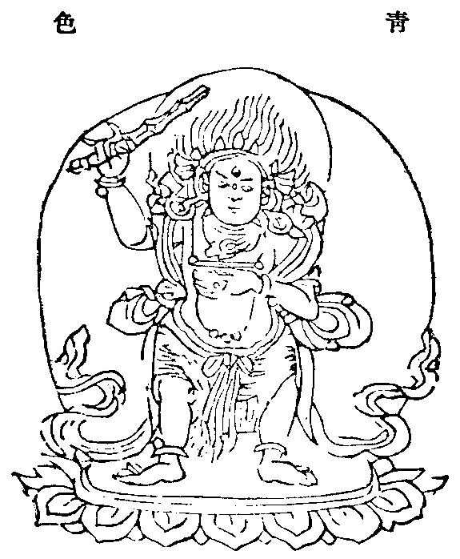
敬禮守護眾地母 亦能鉤召諸神眾
搖顰眉面吽聲字 一切衰敗令度脫
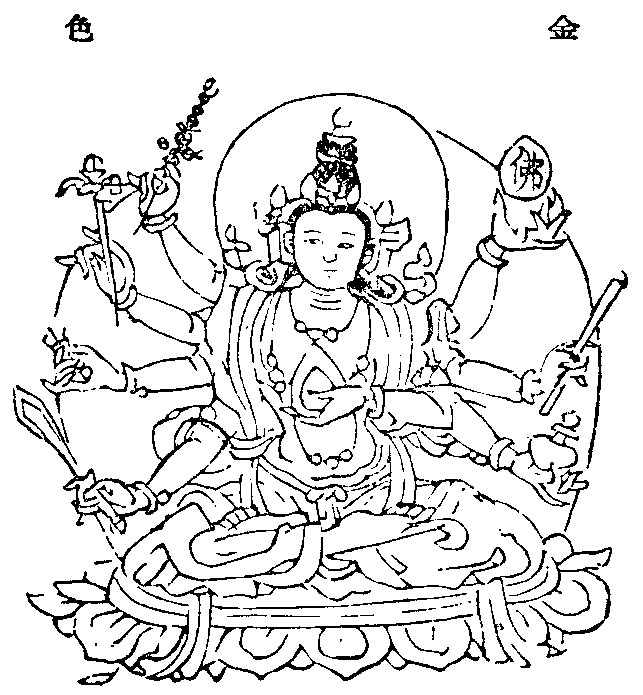
敬禮頂冠月相母 冠中現勝妙嚴光
阿彌陀佛髻中現 常放眾妙寶光明
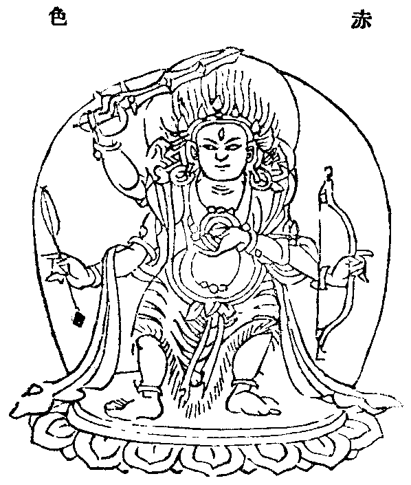
敬禮如盡劫火母 安住熾盛頂髻中
普遍喜悅半趺坐 能摧滅壞惡冤輪
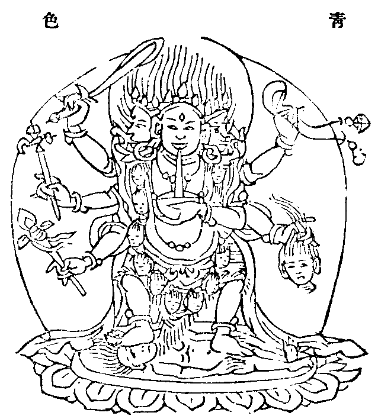
敬禮手按大地母 以足踐蹋作鎮壓
現顰眉面作吽聲 能破七險鎮降伏
敬禮安隱柔善母 涅槃寂滅最樂境
莎訶命種以相應 善能消滅大災禍
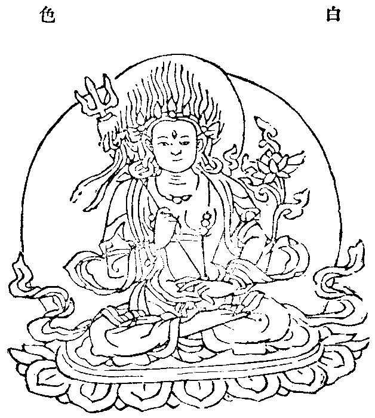
敬禮普遍極喜母 諸怨支體令脫離
十字呪句妙嚴布 明呪吽聲常朗耀
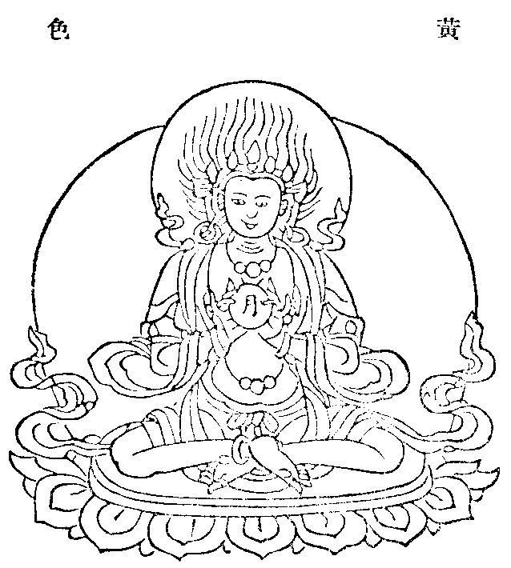
敬禮都哩巴帝母 足躡相勢吽字種
彌嚕曼陀結辣薩 於此三處能搖動
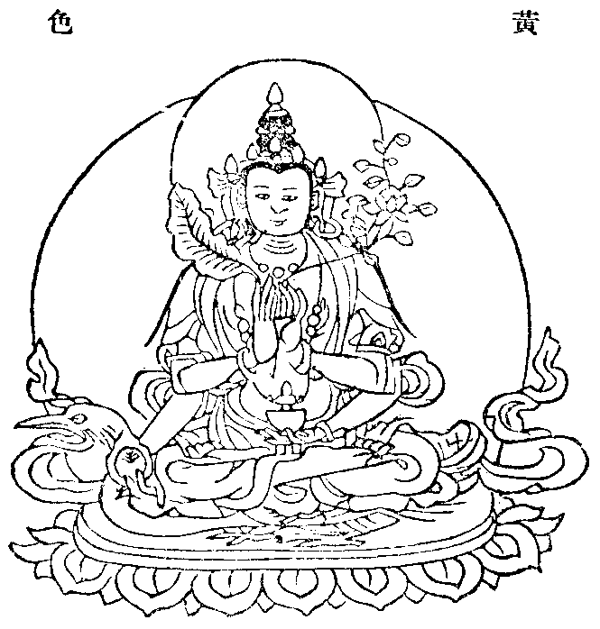
敬禮薩囉天海母 手中執住神獸像
誦二怛囉作發聲 能滅諸毒盡無餘
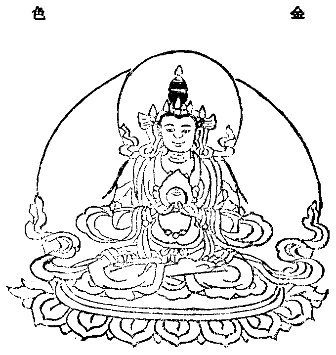
敬禮諸天集會母 天緊那羅所依愛
威德歡悅若堅鎧 滅除鬪諍及惡夢
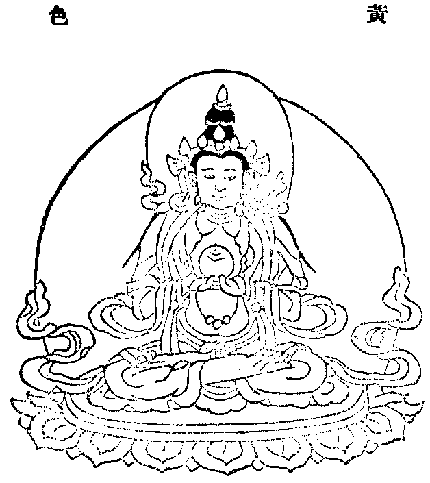
敬禮日月廣圓母 目覩猶勝普光照
誦二喝囉咄怛哩 善除惡毒瘟熱病
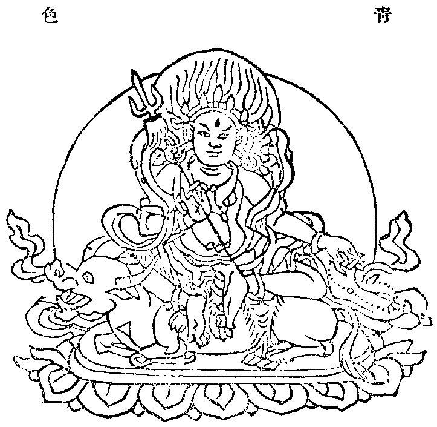
敬禮具三真實母 善靜威力皆具足
藥叉執魅尾怛辣 都哩最極除災禍
若有智者勤精進 至心誦此二十一
救度尊處誠信禮 是故讚嘆根本呪
每晨早起夕時禮 憶念施諸勝無畏
一切罪業盡消除 悉能超越諸惡趣
此等速能得聰慧 七俱胝佛所灌頂
現世富貴壽延安 當來趣向諸佛位
有時誤服諸毒物 或自然生或合成
憶念聖尊真實力 諸惡毒藥盡消滅
或見他人遭鬼魅 或發熱病受諸苦
若轉此讚二三七 彼諸苦惱悉蠲除
欲乞男女得男女 求財寶位獲富饒
善能圓滿隨意願 一切障礙不能侵
佛母尊聖救度母 及諸十方三世中
所有諸佛并弟子 我今一心敬讚禮
花香燈燭及香水 妙食妓樂等供養
實獻即於意所現 皆願眾聖樂納受
自從無始直至今 十不善及五無間
由心煩惱故所造 一切罪惡皆懺悔
聲聞緣覺諸菩薩 乃至凡夫諸有情
三世所積諸福善 我皆隨喜盡無餘
隨諸有情一切愿 宜其種種差別智
應其大小通常類 勸轉一切妙法輪
從今直至輪迴空 請常住世不涅槃
為苦海中諸眾生 悉願聖母慈眼觀
我今所集諸福善 皆成無上菩提因
惟願不久於眾生 證得無上引導師
尊聖佛母具大悲 於我一切諸眾生
速淨諸障滿資糧 願令獲得證菩提
直至無上菩提位 世世獲得常安樂
於修菩提一切處 一切間斷諸魔祟
疾病一切天壽類 並諸惡夢不利相
八怖一切惱害事 願令急速盡消除
世間及於出世間 一切善樂於豐足
增盛一切饒益事 願令獲得自然成
精進修行法增盛 修汝常得見聖顏
悟入空義菩提意 願令暫如朔月增
彼佛眾會咸清淨 我時於勝蓮華生
親睹如來無量光 現前受我菩提記
我從住世所修佛 三世一切佛業母
一面二臂身綠色 願執優婆花吉祥
佛母體微妙云何 及於眷屬共壽量
境界及於號云何 願我等皆亦復然
讚祝爾尊微善力 我等隨方所在處
病魔貧爭盡消除 善祥增長祈皆賜
棄身過莊嚴相好 棄語過獲頻伽音
棄意過證一切智 成勝吉祥功德瑞
聖救度佛母二十一種禮讚經竟